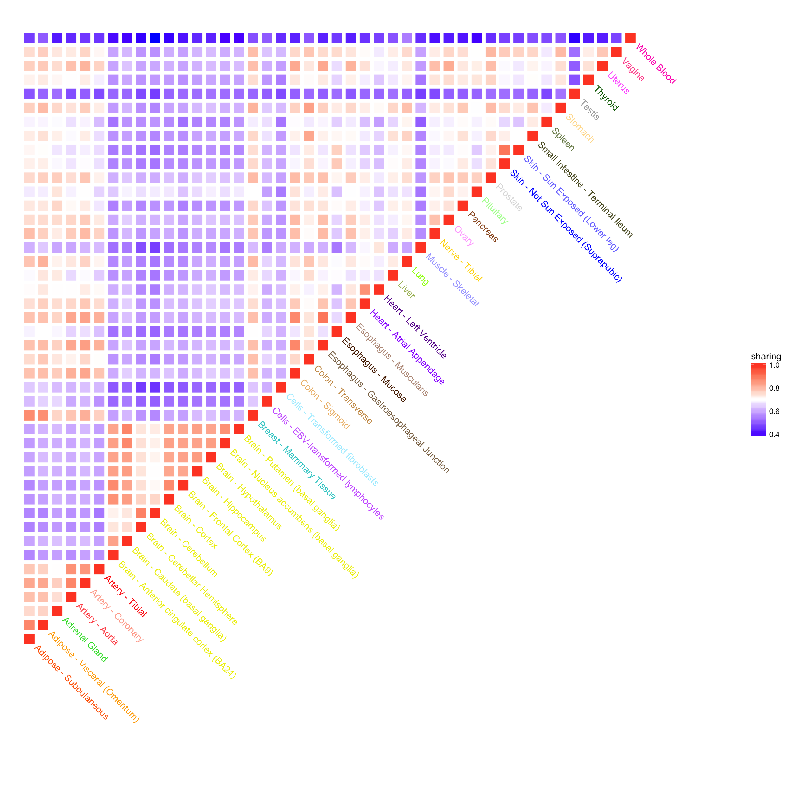

source('../scripts/mylib.R')
library(ashr)
library(mashr)
library(ExtremeDeconvolution)
library(ggplot2)
library(reshape2)## get estimated gtex effect size and standard deviation
con <- gzcon(url('https://github.com/stephenslab/gtexresults/raw/master/data/MatrixEQTLSumStats.Portable.Z.rds'))
data <- readRDS(con)
close(con)
strong.b <- data$test.b
strong.s <- data$test.s
random.b <- data$random.b
random.s <- data$random.s
dim(strong.b)## [1] 16069 44dim(strong.s)## [1] 16069 44dim(random.b)## [1] 20000 44dim(random.s)## [1] 20000 44## get gtex color
gtex.color <- read.table(url('https://github.com/stephenslab/gtexresults/raw/master/data/GTExColors.txt'), sep = '\t', comment.char = '')
gtex.color <- gtex.color[c(1:6,9:18,21:23,26:30,32,33,35,36,38:53), 1:2]
dim(gtex.color)## [1] 44 2tissue.color <- as.character(gtex.color[,2])Followed the steps in eQTL analysis outline of mashr
data.temp <- mash_set_data(random.b, random.s, alpha = 1)
Vhat <- estimate_null_correlation(data.temp)
rm(data.temp)
dim(Vhat)data.random <- mash_set_data(random.b, random.s, V = Vhat, alpha = 1)
data.strong <- mash_set_data(strong.b, strong.s, V = Vhat, alpha = 1)U.pca <- cov_pca(data.strong, 5)
U.ed <- cov_ed(data.strong, U.pca)U.c <- cov_canonical(data.random)model <- mash(data.random, Ulist = c(U.ed, U.c), outputlevel = 1) - Computing 20000 x 1101 likelihood matrix.
- Likelihood calculations took 110.50 seconds.
- Fitting model with 1101 mixture components.
optmethod = "mixIP" requires REBayes package; switching to optmethod = "mixEM" - Model fitting took 1984.37 seconds.m.strong <- mash(data.strong, g = get_fitted_g(model), fixg = TRUE) - Computing 16069 x 1101 likelihood matrix.
- Likelihood calculations took 43.08 seconds.
- Computing posterior matrices.
- Computation allocated took 7.17 seconds.
FIXME: 'compute_posterior_matrices' in Rcpp does not transfer EZ to EEsaveRDS(list(model = model, posterior = m.strong), file = '../output/gtex_mash.rds')share <- get_pairwise_sharing(m.strong)
ntissue <- dim(share)[1]
colnames(share) <- 1 : ntissue
row.names(share) <- 1 : ntissue
df.share <- melt(get_upper_tri(share), na.rm = TRUE)
colnames(df.share) <- c('tissue1', 'tissue2', 'sharing')
df.share$tissue1 <- colorGTEx(df.share$tissue1, gtex.color[, 1], ntissue)
df.share$tissue2 <- colorGTEx(df.share$tissue2, gtex.color[, 1], ntissue)
p <- ggplot() +
geom_tile(data = df.share, aes(x = tissue1, y = tissue2, fill = sharing), color = 'white', size = 2) +
scale_fill_gradient2(midpoint = 0.7, low = "blue", mid = "white", high = "red", space = "Lab" ) +
geom_text(aes(x = 1 : ntissue + 0.5, y= 1 : ntissue - 0.5, label = gtex.color[,1], color = factor(gtex.color[,1])), hjust = 0, angle = -45) +
coord_equal(xlim = c(0, 51), ylim = c(-7, 44)) +
scale_color_manual(values = tissue.color, guide = FALSE)
p <- p +
theme_bw() +
theme(
axis.line = element_blank(),
panel.grid.major = element_blank(),
panel.grid.minor = element_blank(),
panel.border = element_blank(),
panel.background = element_blank(),
axis.title = element_blank(),
axis.text = element_blank(),
axis.ticks = element_blank())
p